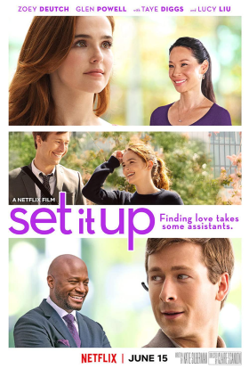
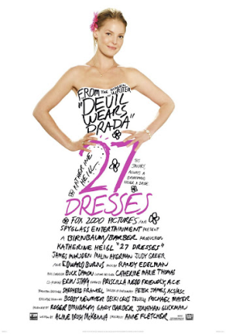

Andy (Anne Hathaway) is a recent college graduate with big dreams. Upon landing a job at prestigious Runway magazine, she finds herself the assistant to diabolical editor Miranda Priestly (Meryl Streep). Andy questions her ability to survive her grim tour as Miranda's whipping girl without getting scorched.
Elle Woods (Reese Witherspoon) has it all. She wants nothing more than to be Mrs. Warner Huntington III. But there is one thing stopping him (Matthew Davis) from proposing: She is too blond. Elle rallies all of her resources and gets into Harvard, determined to win him back.

Two young assistants in New York City realize they can make their lives easier by setting up their workaholic bosses to date. While trying to perpetuate this romantic ruse between their nightmare bosses, the assistants realize they might be right for each other.
Mia (Anne Hathaway), still coming to terms with her life as a princess, graduates from Princeton. She returns to Genovia, and her best friend, Lilly (Heather Matarazzo), goes with her. When they arrive, Mia's grandmother (Julie Andrews) informs her that Mia cannot become queen unless she is married within 30 days. Nicholas Devereaux (Chris Pine) is one of her top suitors, though he is more interested in the crown than Mia.

Perennial bridesmaid Jane (Katherine Heigl) always puts the needs of others before her own, making her the go-to gal whenever someone needs help with wedding plans. So when Jane's younger sister Tess (Malin Akerman) snags the man (Edward Burns) Jane secretly loves, Jane finds herself questioning her role as a wedding junkie for the first time in her life. Meanwhile, a handsome reporter (James Marsden) sees Jane's unusual story as his ticket off the bridal beat.